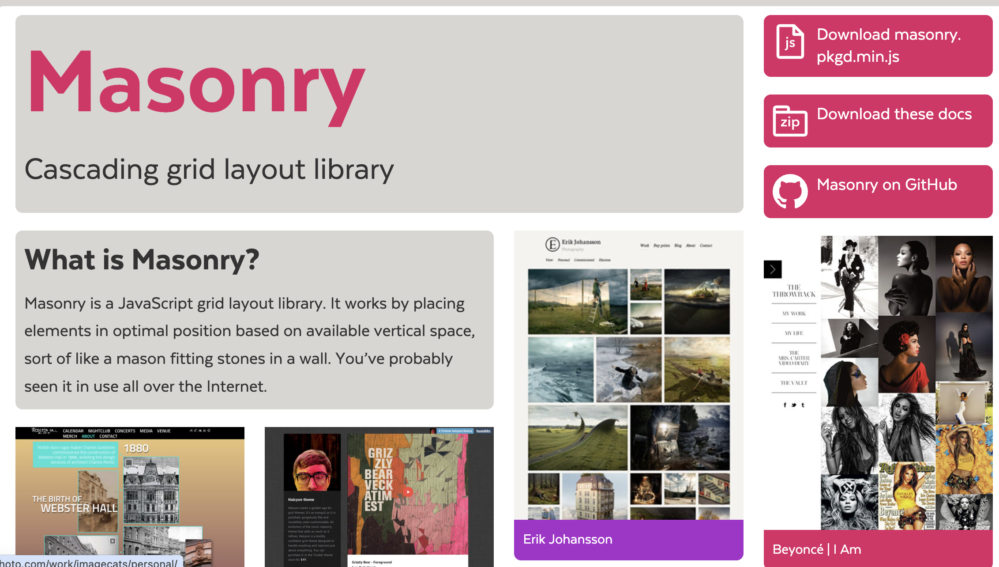
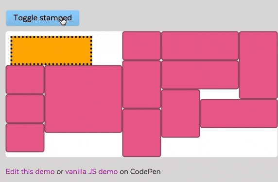
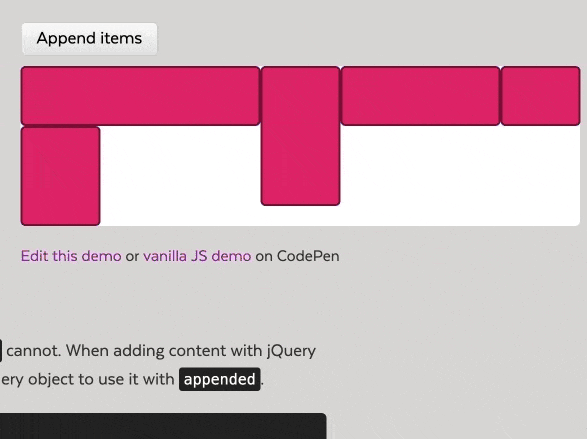
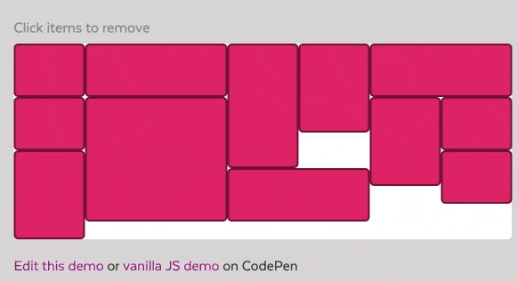

- 01 12 个 JS 动画库
- 02 Fuse.js 轻量高效的模糊搜索库
- 03 Intro.js 神奇用户引导库
- 04 Masonry.js 轻松实现瀑布流
- 05 NProgress.js 页面进度条
- 06 OpenCV 前端图片磨皮处理
- 07 Paper.js 一款神奇的 JavaScript 开源矢量图库
- 08 React Email 前端炫酷写邮件
- 09 Reveal.js 一款神奇的 JavaScript 开源演示框架
- 10 Slidev 新一代幻灯片制作工具
- 11 js 运算精度丢失，用这个库试试
- 12 前端 js 动画库
- 13 前端图片压缩 js-image-compressor
- 14 前端实现人类动作捕捉
- 15 前端数据可视化常用工具大盘点
- 16 基于 Tensorflow.js 在浏览器实现图像识别
- 17 Chroma.js 神奇的 JavaScript 颜色处理和可视化库
- 18 es-toolkit 最先进的JavaScript工具库
- 19 fullPage.j 创建美丽的全屏滚动网站
- 20 浏览器指纹 fingerprintjs2
- 21 Tesseract.js 神奇的前端 OCR 库
- 22 Hammer.js 开源多点触摸手势库
- 23 Gridstack.js Js 开源网格布局库
- 24 以编程方式制作视频的 React 框架 Remotion
瀑布流插件 Masonry.js: 轻松在你的网站实现瀑布流布局
什么是 Maronry

Masonry 是一个 JavaScript 网格布局库。它的工作原理是根据可用的垂直空间将元素放置在最佳位置，有点像泥瓦匠在墙上安装石头。我们在互联网上也许看到过很多瀑布流的案例.
接下来给大家演示一个使用案例:
另一个比较有意思的案例:
当我们动态添加元素的时候, 它可以智能的安排好元素的位置.
再联想一下, 我们玩的消消乐小游戏和拼图类小游戏, 是不是也能用它一键实现呢?
如何使用 Maronry
Maronry 支持 CDN 导入和 npm 安装使用, 这里我介绍一下 npm 的安装和使用方式.
npm install masonry-layout
我们安装好之后可以先编写一下 html 结构:
<div class="grid">
<div class="grid-item">FlowMix</div>
<div class="grid-item grid-item--width2">H5</div>
<div class="grid-item">Dooring</div>
</div>
接下来我们就可以直接使用这个库来初始化瀑布流布局了:
var elem = document.querySelector(".grid");
var msnry = new Masonry(elem, {
// options
itemSelector: ".grid-item",
columnWidth: 200,
});
// 元素参数是一个选择器字符串
var msnry = new Masonry(".grid", {
// options
});
使用起来就是这么简单, 当然文档上还有很多高级用法, 我们也可以学习参考一下:
https://masonry.desandro.com/
分享几个更高级的案例
- 瀑布流布局动画
- 瀑布流 3D 动画
最后
上述项目的 GitHub 地址: